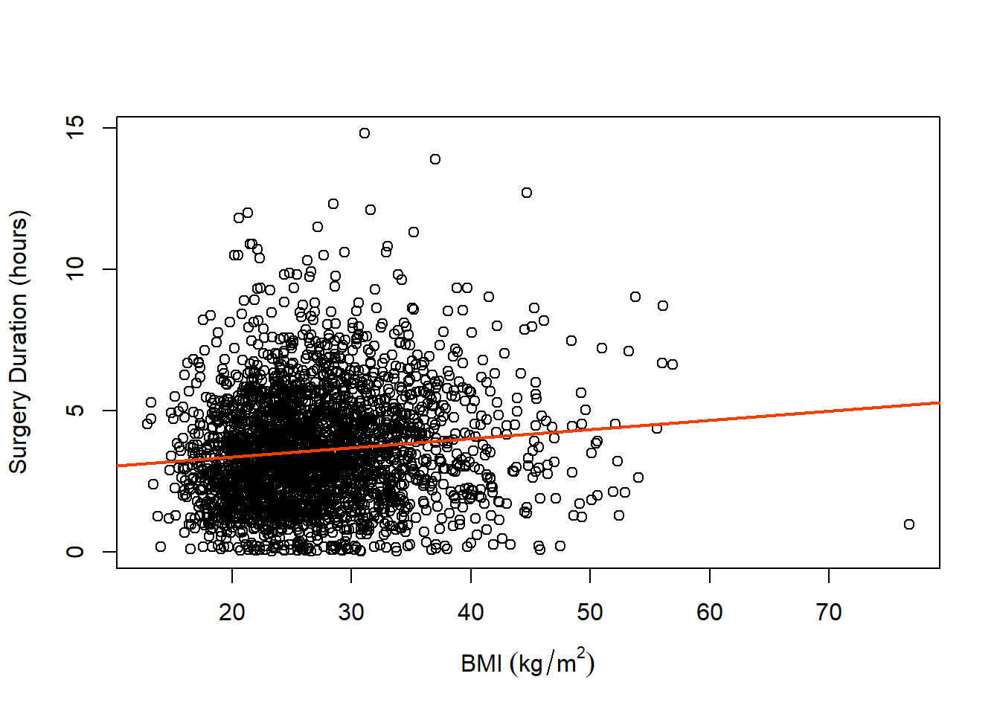

Code
dat <- read.csv('../../.data/Seasonal_Effect.csv')Alex Kaizer
University of Colorado-Anschutz Medical Campus
This page includes the solutions to the optional practice problems for the given week. If you want to see a version without solutions please click here. Data sets, if needed, are provided on the BIOS 6618 Canvas page for students registered for the course.
The following code can load the Seasonal_Effect.csv file into R. The seasonal effect data set contains 2,919 adults who underwent colorectal surgery. For our simple linear regression model, we wish to examine if there is an association between the outcome of how long surgery lasted (DurationSurgery in hours) and the body mass index (BMI in kg/m2).
Fit the simple linear regression model for an outcome of surgery duration with a single predictor for BMI. Print the summary table output for reference in the following questions.
Solution:
We can fit our simple linear regression model using either the lm or glm functions (notice the output is very similar):
Call:
lm(formula = DurationSurgery ~ BMI, data = dat)
Residuals:
Min 1Q Median 3Q Max
-4.2213 -1.3396 -0.1916 1.1093 11.0863
Coefficients:
Estimate Std. Error t value Pr(>|t|)
(Intercept) 2.705949 0.153718 17.603 < 2e-16 ***
BMI 0.032403 0.005537 5.853 5.38e-09 ***
---
Signif. codes: 0 '***' 0.001 '**' 0.01 '*' 0.05 '.' 0.1 ' ' 1
Residual standard error: 1.935 on 2917 degrees of freedom
Multiple R-squared: 0.01161, Adjusted R-squared: 0.01127
F-statistic: 34.25 on 1 and 2917 DF, p-value: 5.378e-09
Call:
glm(formula = DurationSurgery ~ BMI, data = dat)
Coefficients:
Estimate Std. Error t value Pr(>|t|)
(Intercept) 2.705949 0.153718 17.603 < 2e-16 ***
BMI 0.032403 0.005537 5.853 5.38e-09 ***
---
Signif. codes: 0 '***' 0.001 '**' 0.01 '*' 0.05 '.' 0.1 ' ' 1
(Dispersion parameter for gaussian family taken to be 3.743385)
Null deviance: 11048 on 2918 degrees of freedom
Residual deviance: 10919 on 2917 degrees of freedom
AIC: 12141
Number of Fisher Scoring iterations: 2Write down the least-squares regression equation that describes the relationship between surgery duration and BMI based on your output.
Solution:
From our regression output, we can write this in a few ways:
\[ \hat{Y} = 2.71 + 0.03 \times X_{1}, \]
where \(\hat{Y}\) is our outcome of surgery duration in hours and \(X_1\) is BMI in kg/m2. Or:
\[ \text{Surgery Duration} = 2.71 + 0.03 \times \text{BMI}, \]
where we are still aware that the proper notation would have a hat over our outcome.
What is the estimated intercept and how would you interpret it?
Solution:
Our estimated intercept is 2.71. It represents that the predicted surgery duration for an individual with a BMI of 0 kg/m2 is 2.71 hours. Note, this interpretation is not meaningful because one cannot plausibly have a BMI of 0, and even if they could it would be extrapolating outside our observed data.
What is the estimated slope and how would you interpret it?
Solution:
Our estimated slope if 0.03. For every 1 kg/m2 increase in BMI, surgery duration increases, on average, by 0.03 hours (i.e., about 1.8 minutes).
Test the hypothesis that the true slope is 0.
Solution:
From our output we see that \(t=5.853\) and \(p<0.001\) for our slope term (i.e., the BMI row). Since \(p<0.05\), we reject our null hypothesis that the true slope is 0.
For the estimated slope, calculate a 95% confidence interval by hand based on the output with the \(t\)-distribution (i.e., the “correct” calculation).
Solution:
The 95% confidence interval for our slope is
\[ \hat{\beta}_{1} \pm t_{n-2,1-\alpha/2} SE(\hat{\beta}_{1}) = 0.03 \]
In our case we can calculate the \(t\)-statistic using qt(p=0.975, df=2919-2) to be 1.9607776:
\[ 0.032403 \pm 1.960778 \times 0.005537 = (0.02154617, 0.04325983) \]
Our interpretation of this confidence interval is: We are 95% confident that surgery duration increases, on average, between 0.022 and 0.043 hours for a 1 kg/m2 increase in BMI.
For the estimated slope, calculate a 95% confidence interval by hand based on the output with the \(Z\)-distribution (i.e., pretend we forgot to use the \(t\)-distribution and went with the simpler standard normal distribution). How different is your estimated interval and why might it be more similar (or more different) for our given context?
Solution:
If we replace \(t_{n-2,1-\alpha/2}\) with \(Z_{1-\alpha/2}\) we will use qnorm(0.975)=1.959964:
\[ 0.032403 \pm 1.959964 \times 0.005537 = (0.02155068, 0.04325532) \]
In this case, our intervals are extremely similar since the \(t\)-distribution with 2917 degrees of freedom looks extremely like the normal distribution. The 95% confidence interval is slightly wider for 1f, which would be more pronounced if we had a much smaller sample size.
For the estimated slope, calculate a 95% confidence interval using a function in R. Which approach (in f or g) is this confidence interval most like?
Solution:
Using confint we can calculate the 95% confidence interval for our model fit in 1a:
2.5 % 97.5 %
(Intercept) 2.40454149 3.00735660
BMI 0.02154707 0.04325881Waiting for profiling to be done... 2.5 % 97.5 %
(Intercept) 2.40466655 3.0072315
BMI 0.02155158 0.0432543Woah! Shouldn’t our two simple linear regression models have the same confidence intervals regardless of using lm or glm?
It turns out that the lm function is specific to linear (regression) models. For this reason, it uses the \(t\)-distribution to correctly calculate the confidence interval.
The glm function is more general since it fits generalized linear models (e.g., next semester you will learn about logistic regression, Poisson regression, etc. that are all fit with this function). Due to this generality, it assumes the standard normal distribution for its calculation of the confidence interval.
Which is right? Technically, both! In large samples, like we have here, the difference is fairly trivial. However, if we have small samples the approach using the \(t\)-distribution would technically be most appropriate.
Write a brief, but complete, summary of the effect of BMI on surgery duration.
Solution:
There is a significant association between BMI and surgery duration (p<0.001). On average, surgery duration increases 0.03 hours per every 1 kg/m2 increase in BMI (95% CI: 0.022, 0.043 hours).
What is the estimated surgery duration for someone with a BMI of 27.5?
Solution:
We can simply plug in \(X_{1}=27.5\) to our fitted least-squares regression equation from 1b:
\[ \hat{Y} = 2.71 + 0.03 \times 27.5 = 3.535 \text{ hours} \]
Since we rounded to fewer digits, our answers would differ from using the predict function:
Calculate the 95% confidence interval around the mean surgery duration for the population with a BMI of 27.5.
Solution:
One approach is to leverage the predict function in R and specify interval='confidence':
fit lwr upr
1 3.59703 3.526604 3.667456We are 95% confident that the mean surgery duration is between 3.53 and 3.67 hours, on average, for someone with a BMI of 27.5.
Another approach is to estimate the mean squared error (MSE) from our model and calculate the interval “by hand”:
We must also calculate the mean and variance for BMI in our sample:
Now we can use our formula to calculate the standard error of our mean surgery duration for someone with a BMI of 27.5:
\(\begin{aligned} SE\left({\hat{\mu}}_{Y|X=27.5}\right) =& \sqrt{\frac{\hat{\sigma}_{Y|X}^{2}}{n} + \frac{\hat{\sigma}_{Y|X}^{2}}{n-1} \left( \frac{(X_0 - \bar{X})^2}{\hat{\sigma}_{X}^{2}} \right)} \\ =& \sqrt{\frac{3.743385}{2919} + \frac{3.743385}{2918} \left( \frac{(27.5-27.00055)^2}{41.85108} \right)} \\ \approx& 0.0359175 \end{aligned}\)
Then we can calculate our 95% confidence interval, considering \(t_{2919-2,0.975}=1.960778\), our 95% CI is
\[ 3.535 \pm 1.960778(0.0359175) = (3.465, 3.606) \]
Note, rounding at various steps leads to the similar, but different, interval from what R precisely returns.
Calculate the 95% prediction interval around the mean surgery duration for a single individual with a BMI of 27.5.
Solution:
One approach is to leverage the predict function in R and specify interval='predict':
fit lwr upr
1 3.59703 -0.1973025 7.391362We are 95% confident that the surgery duration for an individual with a BMI of 27.5 is between -0.20 and 7.39 hours.
This prediction interval must have the assumption or normality met (i.e., we are not leveraging the central limit theorem like we are for the 95% confidence interval estimating the mean). And given the greater variability involved, we see here that we also have a non-nonsensical negative surgery duration.
Create a scatterplot with the fitted linear regression line.
Solution:
One option is to create this with base R graphics and use abline to automatically add the fitted regression line:

We can see from our scatterplot and fitted regression line that there does appear to be a slight positive trend as BMI increases with respect to surgery duration. Additionally, there are some potential observations that seem very different from much of the data (which we will discuss how to handle more towards the end of the semester).
---
title: "Week 7 Practice Problems: Solutions"
author:
name: Alex Kaizer
roles: "Instructor"
affiliation: University of Colorado-Anschutz Medical Campus
toc: true
toc_float: true
toc-location: left
format:
html:
code-fold: show
code-overflow: wrap
code-tools: true
---
```{r, echo=F, message=F, warning=F}
library(kableExtra)
library(dplyr)
```
This page includes the solutions to the optional practice problems for the given week. If you want to see a version [without solutions please click here](/labs/prac7/index.qmd). Data sets, if needed, are provided on the BIOS 6618 Canvas page for students registered for the course.
# Dataset Background
The following code can load the `Seasonal_Effect.csv` file into R. The seasonal effect data set contains 2,919 adults who underwent colorectal surgery. For our simple linear regression model, we wish to examine if there is an association between the outcome of how long surgery lasted (`DurationSurgery` in hours) and the body mass index (`BMI` in kg/m^2^).
```{r, class.source = 'fold-show'}
dat <- read.csv('../../.data/Seasonal_Effect.csv')
```
# Exercise 1: Simple Linear Regression
## 1a: Fitting the Model
Fit the simple linear regression model for an outcome of surgery duration with a single predictor for BMI. Print the summary table output for reference in the following questions.
**Solution:**
We can fit our simple linear regression model using either the `lm` or `glm` functions (notice the output is very similar):
```{r}
# Fit using lm
lm1 <- lm(DurationSurgery ~ BMI, data=dat)
summary(lm1)
# Fit using glm
glm1 <- glm(DurationSurgery ~ BMI, data=dat)
summary(glm1)
```
## 1b: Fitted Least-Squares Regression Equation
Write down the least-squares regression equation that describes the relationship between surgery duration and BMI based on your output.
**Solution:**
From our regression output, we can write this in a few ways:
$$ \hat{Y} = 2.71 + 0.03 \times X_{1}, $$
where $\hat{Y}$ is our outcome of surgery duration in hours and $X_1$ is BMI in kg/m^2^. Or:
$$ \text{Surgery Duration} = 2.71 + 0.03 \times \text{BMI}, $$
where we are still aware that the proper notation would have a hat over our outcome.
## 1c: Intercept Interpretation
What is the estimated intercept and how would you interpret it?
**Solution:**
Our estimated intercept is 2.71. It represents that the predicted surgery duration for an individual with a BMI of 0 kg/m^2^ is 2.71 hours. *Note, this interpretation is not meaningful because one cannot plausibly have a BMI of 0, and even if they could it would be extrapolating outside our observed data.*
## 1d: Slope Interpretation
What is the estimated slope and how would you interpret it?
**Solution:**
Our estimated slope if 0.03. For every 1 kg/m^2^ increase in BMI, surgery duration increases, on average, by 0.03 hours (i.e., about 1.8 minutes).
## 1e: Slope Hypothesis Test
Test the hypothesis that the true slope is 0.
**Solution:**
From our output we see that $t=5.853$ and $p<0.001$ for our slope term (i.e., the `BMI` row). Since $p<0.05$, we reject our null hypothesis that the true slope is 0.
## 1f: CI for Slope with $t$
For the estimated slope, calculate a 95% confidence interval *by hand* based on the output with the $t$-distribution (i.e., the "correct" calculation).
**Solution:**
The 95% confidence interval for our slope is
$$ \hat{\beta}_{1} \pm t_{n-2,1-\alpha/2} SE(\hat{\beta}_{1}) = 0.03 $$
In our case we can calculate the $t$-statistic using `qt(p=0.975, df=2919-2)` to be `r qt(p=0.975, df=2919-2)`:
$$ 0.032403 \pm 1.960778 \times 0.005537 = (0.02154617, 0.04325983) $$
Our interpretation of this confidence interval is: We are 95% confident that surgery duration increases, on average, between 0.022 and 0.043 hours for a 1 kg/m^2^ increase in BMI.
## 1g: CI for Slope with $Z$
For the estimated slope, calculate a 95% confidence interval *by hand* based on the output with the $Z$-distribution (i.e., pretend we forgot to use the $t$-distribution and went with the simpler standard normal distribution). How different is your estimated interval and why might it be more similar (or more different) for our given context?
**Solution:**
If we replace $t_{n-2,1-\alpha/2}$ with $Z_{1-\alpha/2}$ we will use `qnorm(0.975)`=`r qnorm(0.975)`:
$$ 0.032403 \pm 1.959964 \times 0.005537 = (0.02155068, 0.04325532) $$
In this case, our intervals are *extremely* similar since the $t$-distribution with 2917 degrees of freedom looks extremely like the normal distribution. The 95% confidence interval is slightly wider for **1f**, which would be more pronounced if we had a much smaller sample size.
## 1h: CI for Slope in R
For the estimated slope, calculate a 95% confidence interval using a function in R. Which approach (in **f** or **g**) is this confidence interval most like?
**Solution:**
Using `confint` we can calculate the 95% confidence interval for our model fit in **1a**:
```{r}
# Calculate the confidence interval for lm first
confint(lm1)
# Calculate the confidence interval for glm second
confint(glm1)
```
**Woah!** Shouldn't our two simple linear regression models have the *same* confidence intervals regardless of using `lm` or `glm`?
It turns out that the `lm` function is specific to linear (regression) models. For this reason, it uses the $t$-distribution to correctly calculate the confidence interval.
The `glm` function is more general since it fits generalized linear models (e.g., next semester you will learn about logistic regression, Poisson regression, etc. that are all fit with this function). Due to this generality, it assumes the standard normal distribution for its calculation of the confidence interval.
Which is right? Technically, both! In large samples, like we have here, the difference is fairly trivial. However, if we have small samples the approach using the $t$-distribution would technically be most appropriate.
## 1i: Summary for Slope
Write a brief, but complete, summary of the effect of BMI on surgery duration.
**Solution:**
There is a significant association between BMI and surgery duration (p<0.001). On average, surgery duration increases 0.03 hours per every 1 kg/m^2^ increase in BMI (95% CI: 0.022, 0.043 hours).
## 1j: Prediction
What is the estimated surgery duration for someone with a BMI of 27.5?
**Solution:**
We can simply plug in $X_{1}=27.5$ to our fitted least-squares regression equation from **1b**:
$$ \hat{Y} = 2.71 + 0.03 \times 27.5 = 3.535 \text{ hours} $$
Since we rounded to fewer digits, our answers would differ from using the `predict` function:
```{r}
predict(lm1, # specify model to predict from
newdata=data.frame(BMI=27.5)) # create new data frame of data to predict, here it is only 1 observation
```
## 1k: Confidence Interval Around Prediction
Calculate the 95% confidence interval around the mean surgery duration for the population with a BMI of 27.5.
**Solution:**
One approach is to leverage the `predict` function in R and specify `interval='confidence'`:
```{r}
# prediction with 95% CI from model for BMI=27.5
predict(lm1, newdata=data.frame(BMI=27.5), interval='confidence')
```
We are 95% confident that the mean surgery duration is between 3.53 and 3.67 hours, on average, for someone with a BMI of 27.5.
Another approach is to estimate the mean squared error (MSE) from our model and calculate the interval "by hand":
```{r}
# calculate our mean squared error
sum( lm1$residuals^2 ) / (nrow(dat) - 2)
```
We must also calculate the mean and variance for BMI in our sample:
```{r}
# calculate mean; variance BMI
mean( dat$BMI ); var(dat$BMI)
```
Now we can use our formula to calculate the standard error of our mean surgery duration for someone with a BMI of 27.5:
$\begin{aligned}
SE\left({\hat{\mu}}_{Y|X=27.5}\right) =& \sqrt{\frac{\hat{\sigma}_{Y|X}^{2}}{n} + \frac{\hat{\sigma}_{Y|X}^{2}}{n-1} \left( \frac{(X_0 - \bar{X})^2}{\hat{\sigma}_{X}^{2}} \right)} \\
=& \sqrt{\frac{3.743385}{2919} + \frac{3.743385}{2918} \left( \frac{(27.5-27.00055)^2}{41.85108} \right)} \\
\approx& 0.0359175
\end{aligned}$
Then we can calculate our 95% confidence interval, considering $t_{2919-2,0.975}=1.960778$, our 95% CI is
$$ 3.535 \pm 1.960778(0.0359175) = (3.465, 3.606) $$
*Note, rounding at various steps leads to the similar, but different, interval from what R precisely returns.*
## 1l: Prediction Interval Around Prediction
Calculate the 95% prediction interval around the mean surgery duration for a single individual with a BMI of 27.5.
**Solution:**
One approach is to leverage the `predict` function in R and specify `interval='predict'`:
```{r}
# prediction with 95% CI from model for BMI=27.5
predict(lm1, newdata=data.frame(BMI=27.5), interval='predict')
```
We are 95% confident that the surgery duration for an individual with a BMI of 27.5 is between -0.20 and 7.39 hours.
This prediction interval must have the assumption or normality met (i.e., we are not leveraging the central limit theorem like we are for the 95% confidence interval estimating the mean). And given the greater variability involved, we see here that we also have a non-nonsensical negative surgery duration.
## 1m: Scattplot and Fitted Line
Create a scatterplot with the fitted linear regression line.
**Solution:**
One option is to create this with base R graphics and use `abline` to automatically add the fitted regression line:
```{r}
# Create scatterplot
plot(x=dat$BMI, y=dat$DurationSurgery, xlab=expression(BMI~(kg/m^2)), ylab='Surgery Duration (hours)' )
# Add regression fit
abline(lm1, lwd=2, col='orangered2')
```
We can see from our scatterplot and fitted regression line that there does appear to be a slight positive trend as BMI increases with respect to surgery duration. Additionally, there are some potential observations that seem very different from much of the data (which we will discuss how to handle more towards the end of the semester).